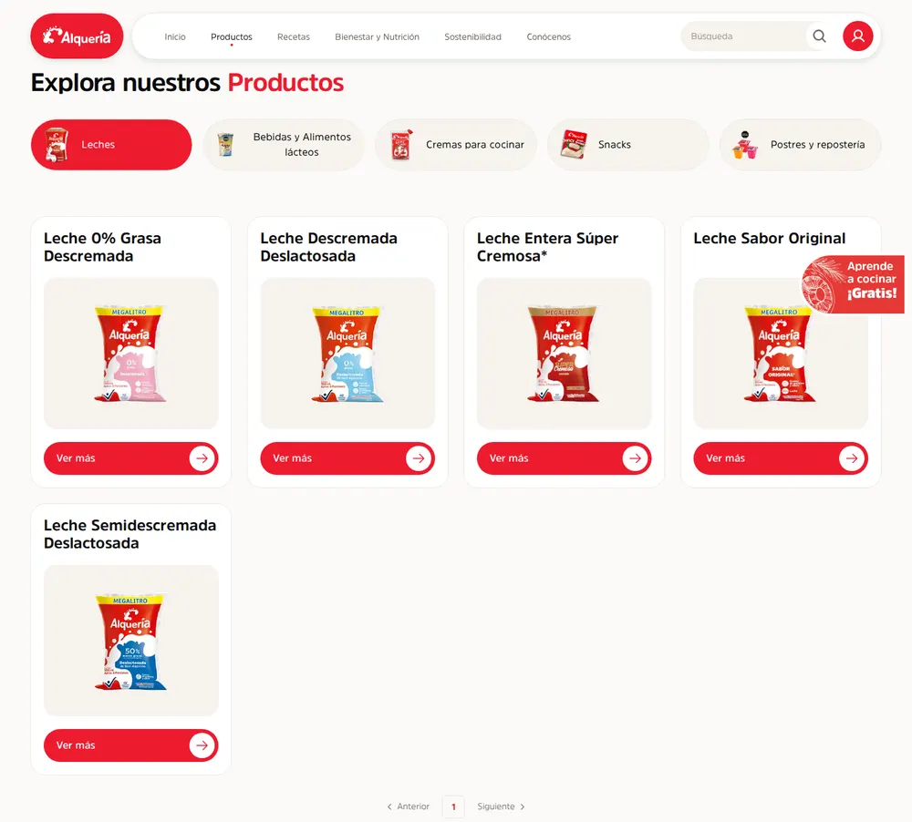
Alquería
35- Catálogo con chips de categoría.
- Página de certificaciones con sello y explicación.
- Recetas y blog de uso.
Tomamos: certificados explicados y descargables; filtros por formato.
Preparado por 3DIGIT-ALL FACTORY S.A.S. para Inversiones Mundilácteos S.A.S., septiembre de 2026. Ver también la propuesta v1 (conceptos 1 y 2)
Auditamos el sitio actual y a cinco competidores. Con eso diseñamos dos conceptos nuevos, con los colores de su marca y prototipos que se pueden navegar hoy.
Puntaje de rendimiento móvil (Lighthouse). Hoy contra el Concepto 4.
Tiempo hasta ver el contenido principal en celular. Hoy contra el Concepto 4.
Peso de la página de inicio. Hoy contra el Concepto 4.
Puntaje de accesibilidad. Hoy contra el Concepto 3.
WordPress 6.8 con Elementor 3.7.8 y el tema Astra, en Hostinger con PHP 7.4.33. El contenido no se toca desde febrero de 2023.
para ver el contenido principal en celular. La meta es menos de 2,5 s.
familias visibles frente a las referencias que la empresa publica en su propio texto.
imágenes de la home sin texto alternativo, incluido el logo.
último año con soporte de seguridad de PHP 7.4, la versión que usa el servidor.
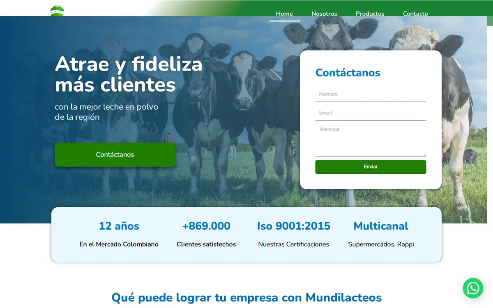
HoyConcepto 3Deslice para comparar la primera pantalla en escritorio (1440 px).
Elementor 3.7.8 también es de 2022.
19 hojas de estilo y 19 scripts externos; 2,1 s de ahorro posibles.
lang="en" y og:locale en_US en un sitio en español.
Uno de ellos dice "Home".
Aparecen en el sitemap.
3 familias sin ficha, foto por gramaje ni forma de cotizar.
311 429 3448 en la home y 319 769 0990 en el resto.
"11 años" y "12 años"; la azucarada dice "The Cántaro presentaciones"; embalaje de 800 g y 100 g que no existen.
Mismo texto, dos nombres, y el error "Mudilacteos".
Recorte de 350 × 286 px que se corta en celular.
El H1 del celular no es el mismo del escritorio.
Facebook, Twitter y YouTube no llevan a ninguna parte.
Cuatro textos distintos para el mismo formulario.
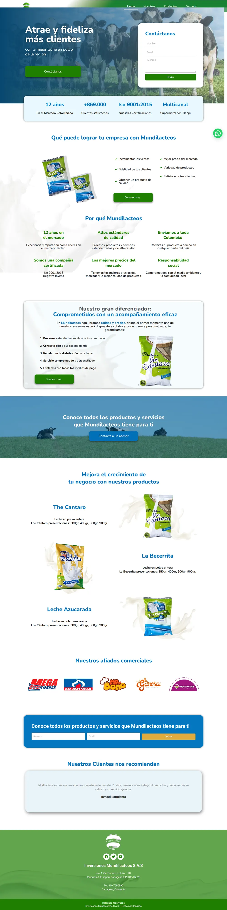
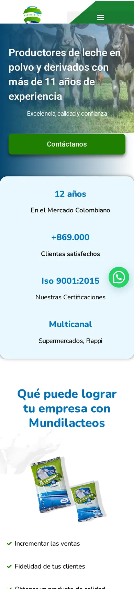
Los líderes nacionales (Colanta, Alpina, Alquería), el competidor directo en la costa (Coolechera) y el mejor sitio B2B de leche en polvo por bulto (Bluxus). Ninguno pasa de 61 en rendimiento móvil.
Una corrida por sitio el 25-sep-2026; los conceptos, mediana de tres corridas en servidor local. Los valores exactos están en la comparativa.

Tomamos: certificados explicados y descargables; filtros por formato.
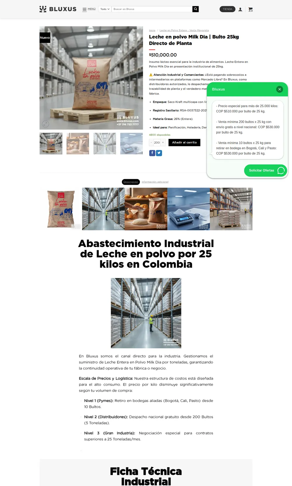
Tomamos: ficha por referencia con volumen y usos. Evitamos sus fotos genéricas.
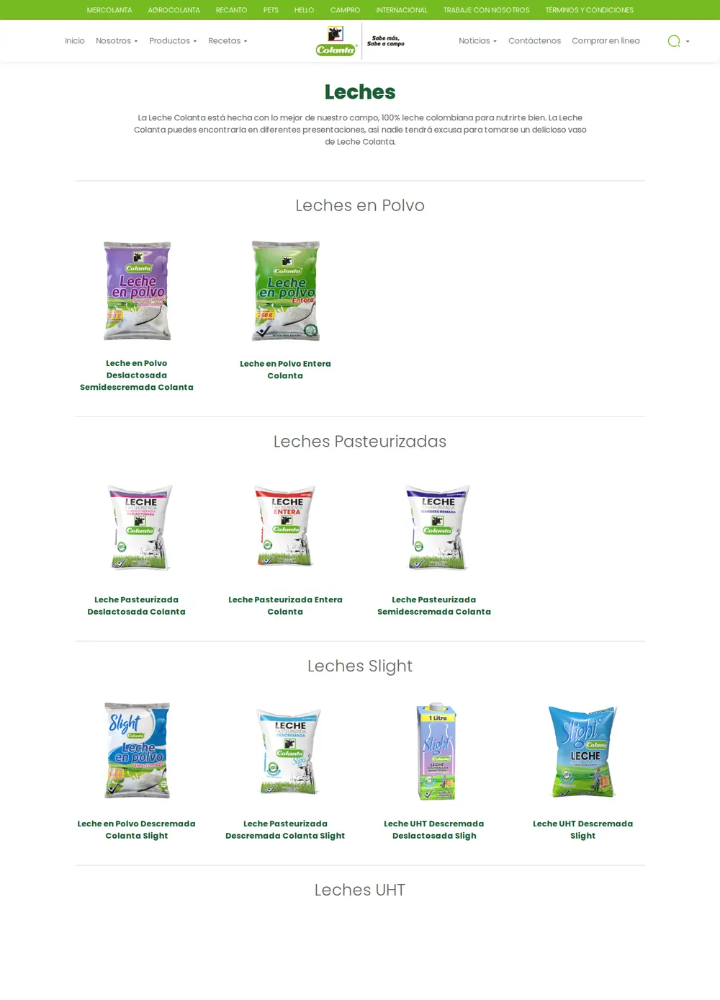
Tomamos: agrupar por formato y contar el origen en Cartagena con datos.
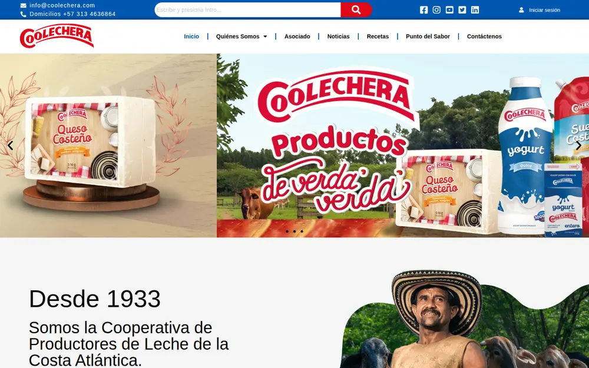
Tomamos: contacto por tipo de cliente y cobertura con mapa.
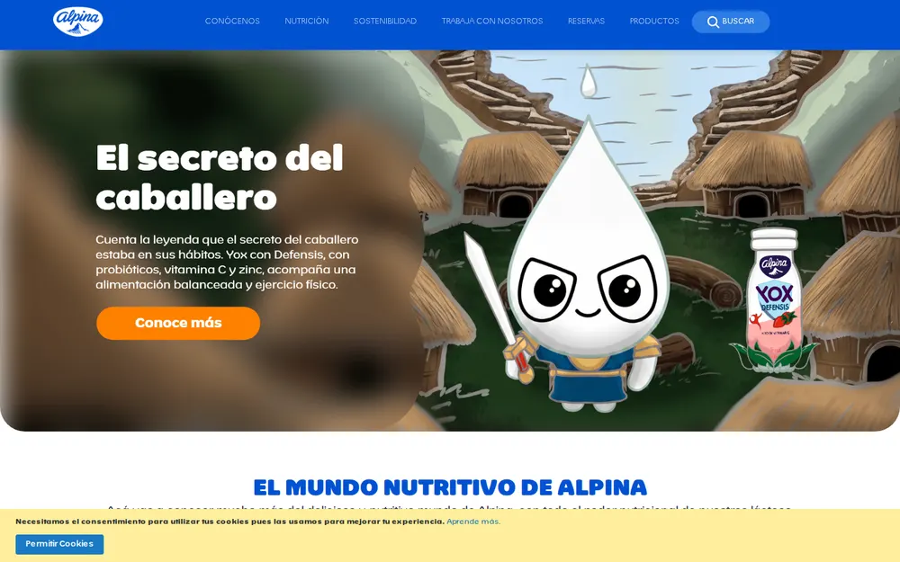
Tomamos: The Cántaro y La Becerrita con personalidad propia, sin el peso.
Deslice la fila para ver los cinco competidores.
Tomamos cada color del logo actual y de los colores globales del sitio. Los dos conceptos usan la misma paleta; lo que cambia es cuál domina. Toque un color para copiar su código.
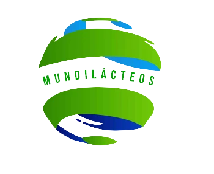
Logo actual. El nuevo logo, cuando exista, conserva esta familia de verdes y azules.
Proporción aproximada de superficie en la página de inicio.
Concepto 3, inspirado en lo mejor del segmento
Un sitio corporativo B2B que muestra todo lo que un comprador necesita verificar: 26 referencias con ficha, certificados descargables y cobertura de despacho.
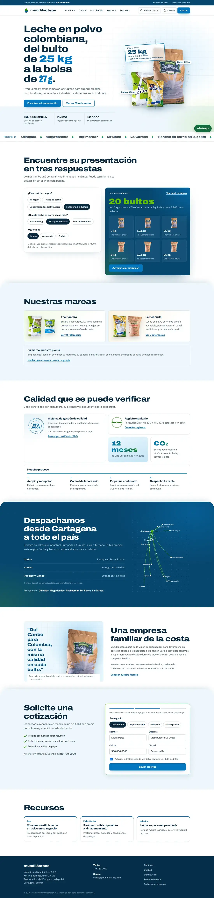
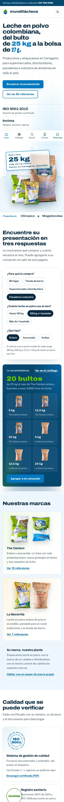
Desplace dentro de las pantallas para recorrer la página.
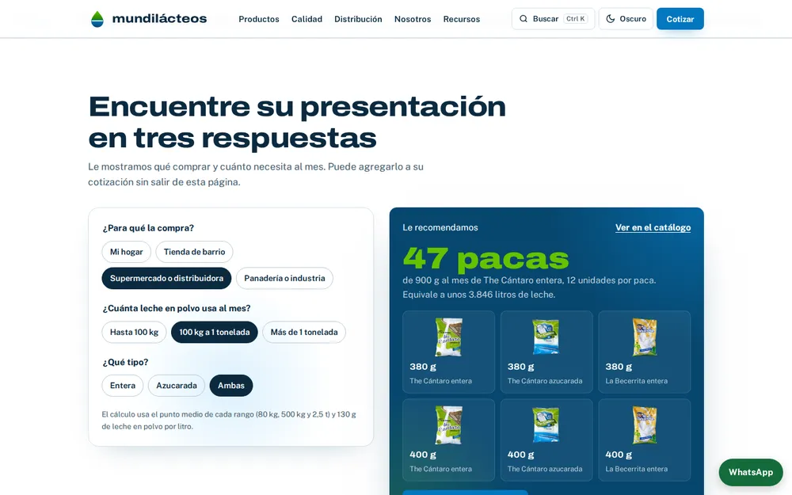
Tres respuestas y calcula cuánto comprar al mes: 47 pacas de 900 g para un supermercado.
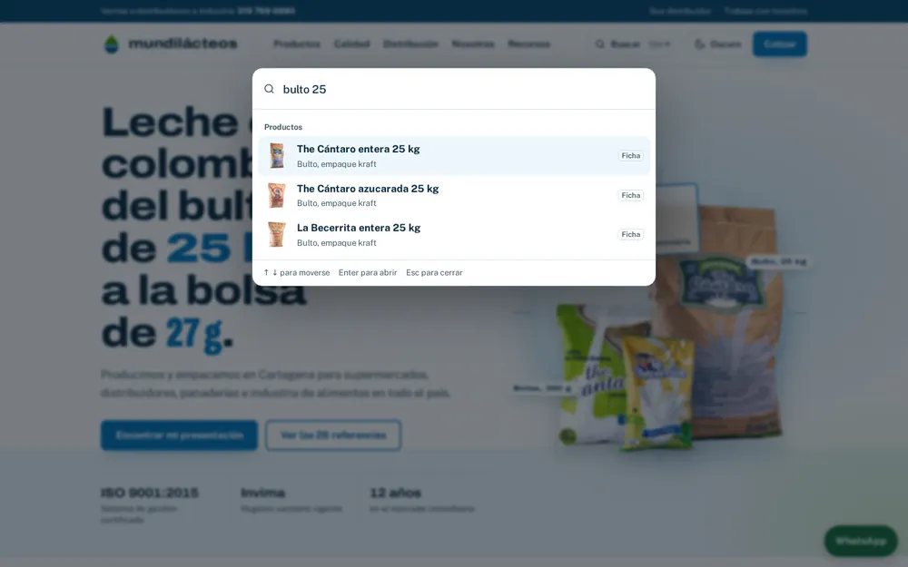
"bulto 25" encuentra las tres referencias al escribir, con teclado.
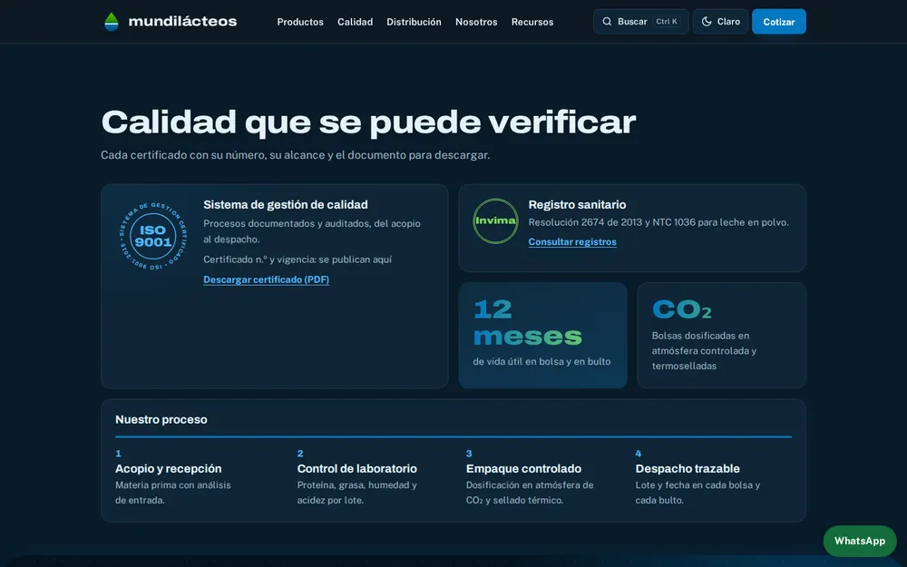
ISO, Invima, vida útil y proceso en un bento. El modo oscuro sigue al sistema.
Concepto 4, independiente
Responde la pregunta de todo comprador: cuánta leche sale de cada presentación. Se navega por necesidad (casa, tienda, panadería) y el pedido se envía por WhatsApp.
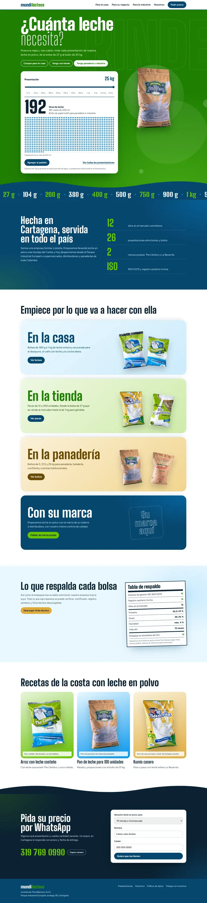
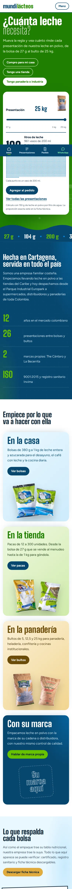
Desplace dentro de las pantallas para recorrer la página.
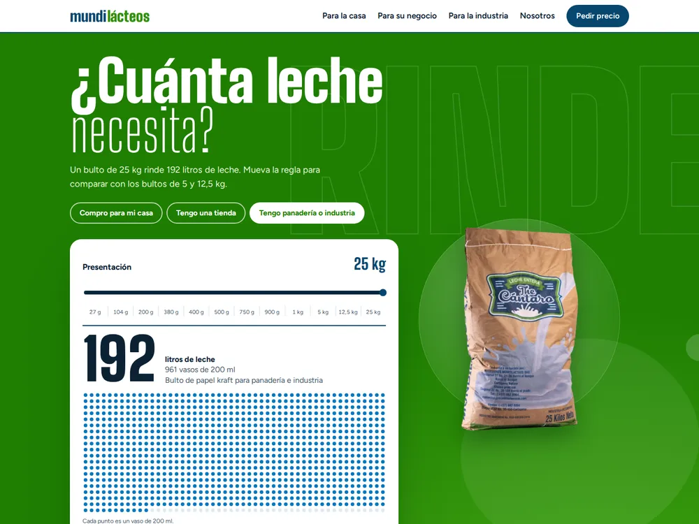
El bulto de 25 kg como 961 vasos de 200 ml, cada uno un punto.
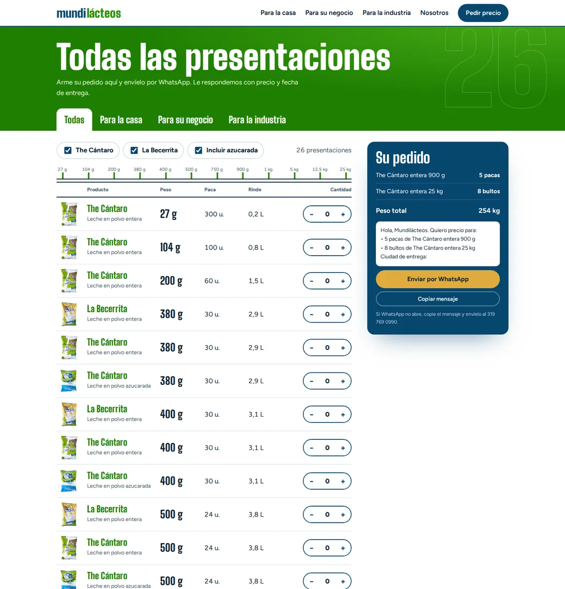
Ordenada por peso, con paca, rendimiento y pedido con + y −.
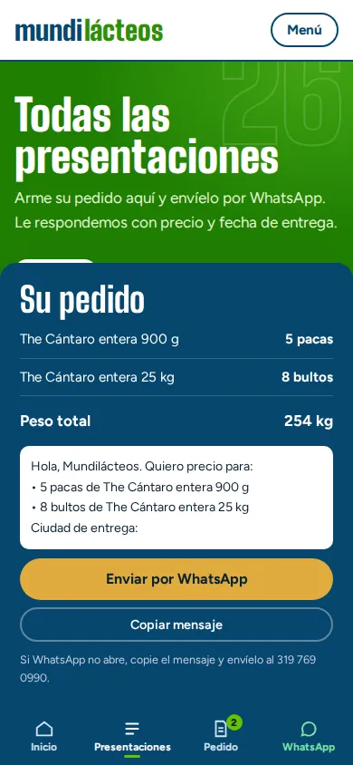
Peso total calculado y mensaje listo para enviar o copiar.
Cada concepto tiene una tipografía con un eje variable que cuenta algo del producto, y un solo momento de movimiento protagonista. Pruebe las fuentes aquí.
Concepto 3 · Archivo, eje de ancho de 62 a 125
25 kg
El ancho de la letra representa el tamaño del empaque: el bulto de 25 kg se escribe expandido y la bolsa de 27 g condensada. Al cargar la página, las dos palabras se estiran y se comprimen una sola vez.
Concepto 4 · Big Shoulders, eje de peso de 100 a 900
192 litros
Letra condensada de letrero de tienda. El titular pasa de fino a grueso al cargar, los títulos ganan peso al entrar en pantalla y la versión stencil imita la impresión de los sacos.
27 g ✦ 900 g ✦ 25 kg
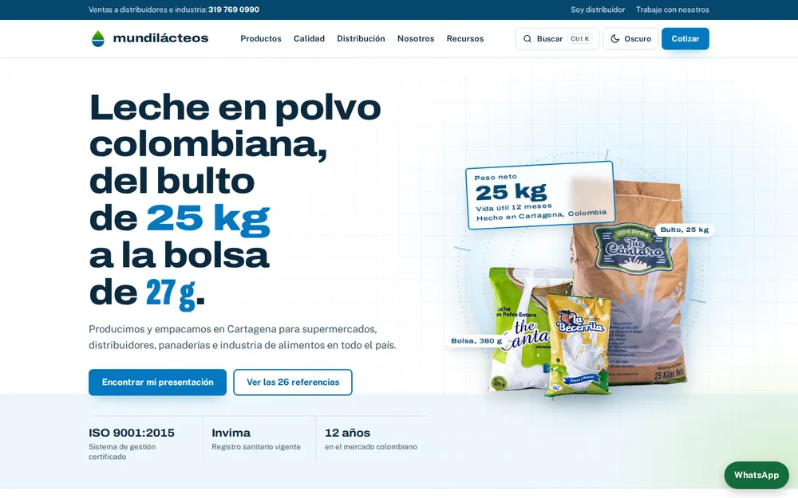
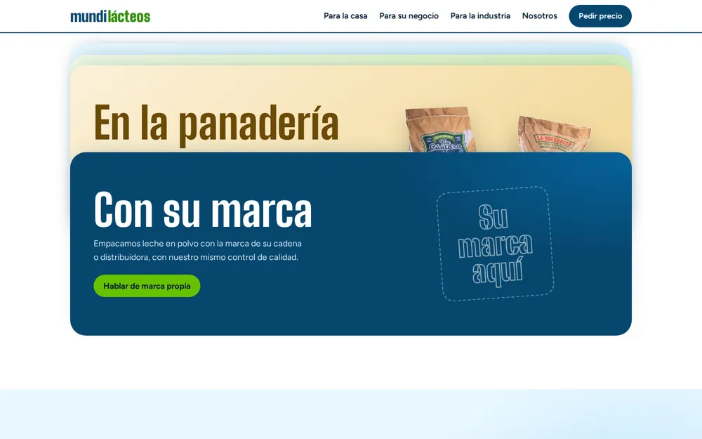
Todo el movimiento respeta la opción "reducir movimiento" del sistema y el contenido se ve completo aunque el navegador no soporte los efectos.
Solo usamos tendencias que funcionan hoy en Chrome y Safari o son estándar de la web, que tienen respaldo en sitios B2B y que no rompen nada si un navegador no las soporta.
Gartner y 6sense, citados por DesignRush: el comprador B2B arma su lista antes de llamar.
Entrar por necesidad y no por catálogo, según DesignRush.
Basada en lo que el visitante dice de sí mismo, sin rastreo invasivo.
El patrón de las herramientas profesionales: Ctrl K o ⌘ K.
View Transitions nativas. En Firefox se navega normal.
Solo CSS, incluida en Interop 2026. Respeta "reducir movimiento".
Popover API desde enero de 2025: menús sin librerías.
Los accesos quedan en la zona del pulgar (Designmodo).
Los compradores investigan con asistentes de IA.
| Sitio actual | Concepto 3, Planta Abierta | Concepto 4, Rinde | |
|---|---|---|---|
| Cliente principal | Indefinido | Compras de supermercados, distribuidores e industria | Tenderos, panaderías y hogar, sin dejar de lado al mayorista |
| Referencias visibles | 3 familias | 26, con ficha | 26, con rendimiento |
| Forma de pedir | Formulario genérico | Carrito de cotización y formulario por tipo de cliente | Pedido con cantidades por WhatsApp |
| Color dominante | Verde y azul sin sistema | Azul de marca | Verde de marca |
| Rendimiento móvil, home | 62 | 84 | 88 |
| Rendimiento móvil, catálogo | 72 | 86 | 90 |
| Accesibilidad, home | 93 | 100 | 97 |
| Peso de la home | 850 KiB | 336 KiB | 170 KiB |
| Tiempo hasta el contenido principal | 6,8 s | 3,3 s | 2,9 s |
Lighthouse móvil. Sitio actual: una corrida el 25-sep-2026. Conceptos: mediana de tres corridas en servidor local; en Hostinger sumará el tiempo de respuesta del servidor. Las animaciones de entrada y las fuentes cargadas desde Google cuestan unos puntos en el prototipo; en producción las fuentes van en el mismo hosting y el CSS crítico en línea. El contraste que falta en el Concepto 4 es el del logotipo, exento en WCAG.
Hostinger sirve HTML y PHP sin WordPress. Ningún concepto queda limitado por un gestor de contenidos.
HTML ya construido, sin base de datos: rápido y seguro. Cada una de las 26 referencias tiene su propia página indexable.
Decap CMS o Pages CMS permiten cambiar productos y blog sin WordPress. Alternativa: un panel PHP sencillo en el mismo hosting.
Script PHP que envía cotizaciones al correo de ventas, con anti-spam y autorización de datos (Ley 1581 de 2012).
Migración: conservar /productos/, /nosotros/ y /contacto/ con redirecciones 301; retirar WordPress al publicar o, si sigue un tiempo, subir PHP a 8.2 o superior. Falta confirmar el plan de Hostinger y el acceso a hPanel.
Los prototipos usan los datos publicados hoy. Estos puntos se contradicen o son supuestos nuestros.
Se pueden combinar: por ejemplo el catálogo del 3 con la calculadora del 4.
Logo actualizado, fotografía de producto y planta, datos validados.
Todas las páginas en escritorio y celular, con textos finales.
Construcción, redirecciones, pruebas de velocidad y publicación.
El orden es fijo; la duración depende de la entrega de fotografías y datos.